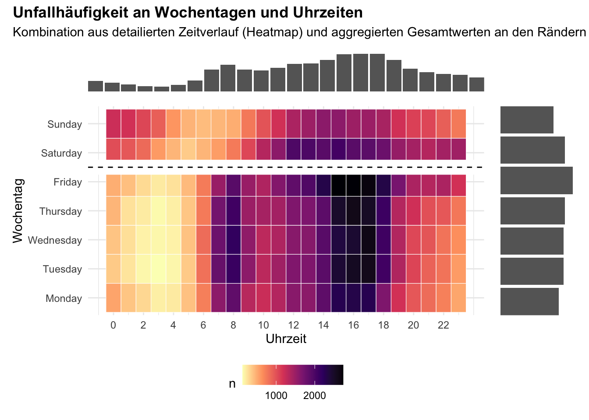
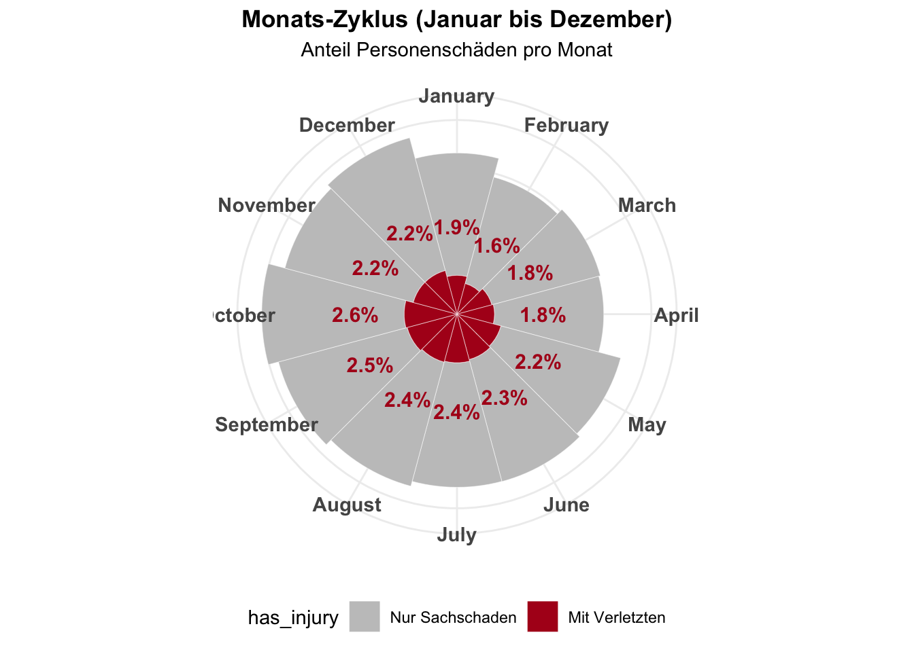
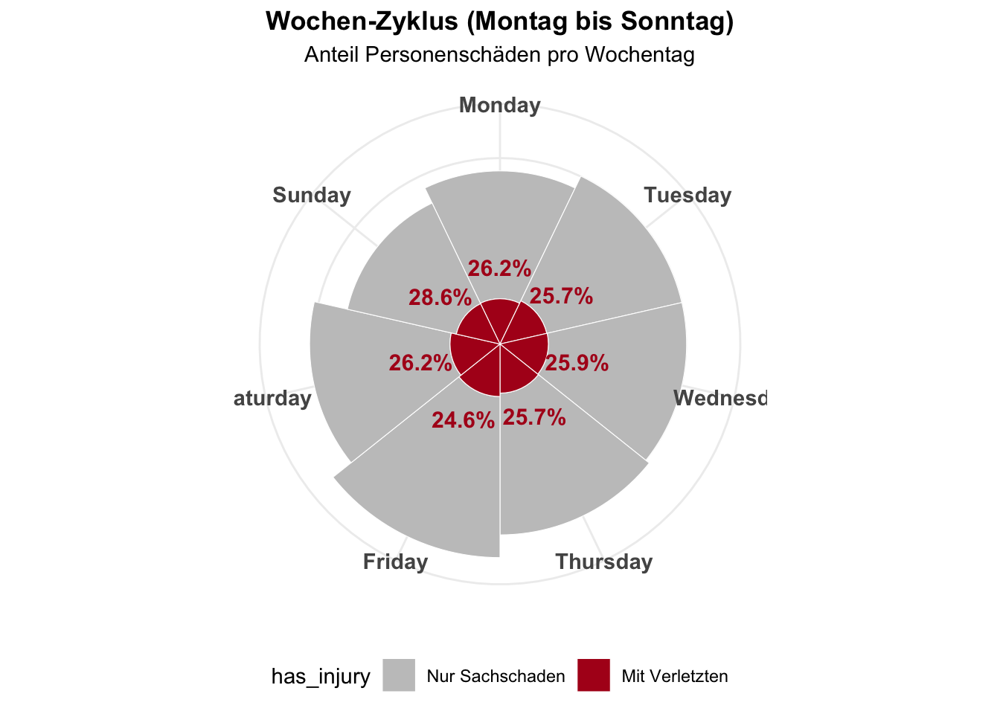
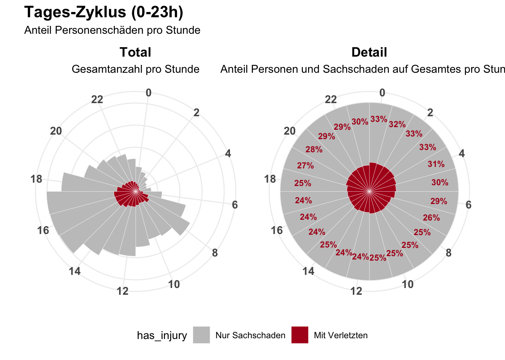
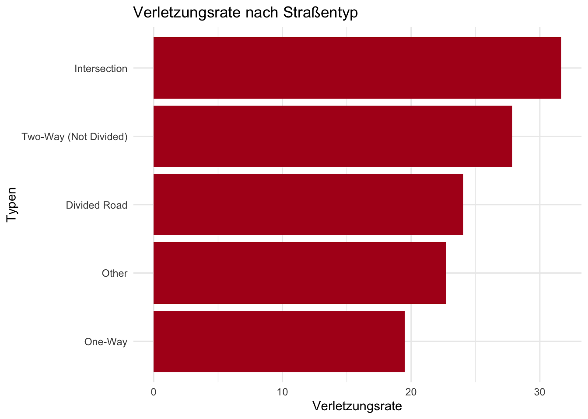
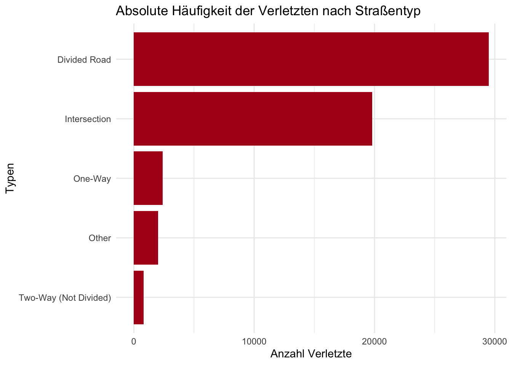
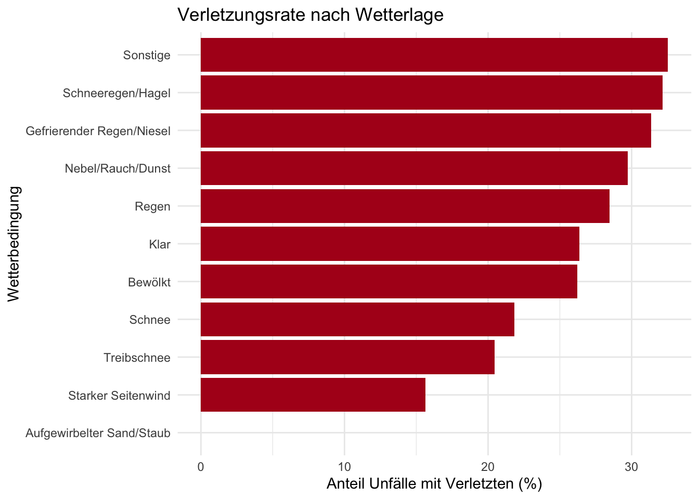
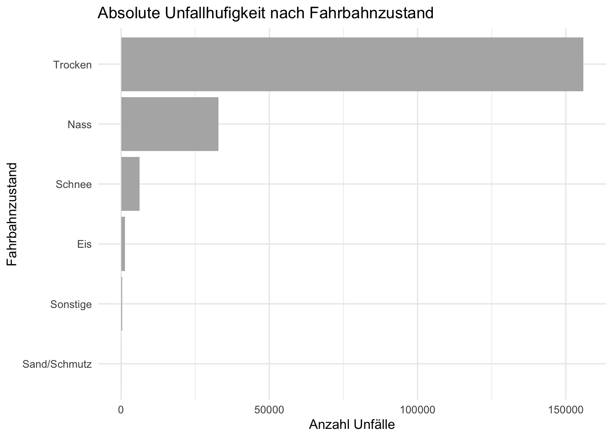
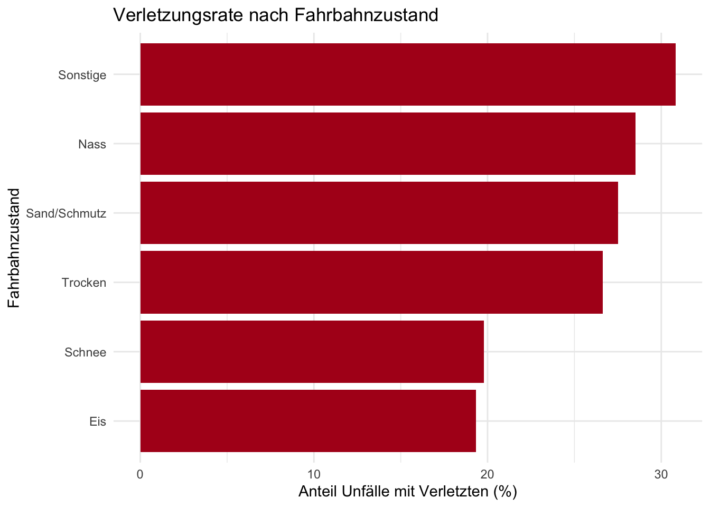

Definieren Sie eine interessierende bzw. interessante Fragestellung im Zusammenhang mit dem Datensatz:
Was interessiert Sie an dem Datensatz?
Welche spezifische Fragestellung würden Sie gern mit Hilfe des Datensatzes beantworten?
Was erwarten Sie, angesichts Ihrer Fragestellung, bezüglich des Datensatzes?
Ausgangspunkt unserer Analyse ist ein umfangreicher Datensatz zu Verkehrsunfällen. Dieser enthält zeitliche Informationen, Angaben zu den Umgebungsbedingungen wie Wetter und Lichtverhältnisse sowie Merkmale zur Art des Unfalls und zur Schwere der Verletzungen. Besonders interessant ist dabei die Kombination aus zeitlichen, infrastrukturellen und situativen Variablen. Denn Verkehrsunfälle entstehen in der Regel nicht durch einen einzelnen Faktor, sondern durch das Zusammenspiel mehrerer Rahmenbedingungen. Wir untersuchen, ob sich aus diesen Daten systematische Muster erkennen lassen, die über reine Unfallhäufigkeiten hinausgehen und Hinweise auf typische Risikosituationen geben.
Konkret lautet unsere Fragestellung: Welche äußeren Bedingungen und Unfalleigenschaften stehen in einem erkennbaren Zusammenhang mit der Schwere von Verkehrsunfällen? Im Fokus steht, ob bestimmte Kombinationen aus Wetterlage, Lichtverhältnissen, Unfalltyp, Wochentag und Verkehrssituation häufiger mit Verletzungen oder schweren Unfällen verbunden sind als andere. Das Ziel der Analyse ist nicht die Vorhersage einzelner Unfälle, sondern ein besseres Verständnis dafür, unter welchen Bedingungen Unfälle eher glimpflich verlaufen und wann das Risiko für Verletzungen deutlich ansteigt.
Auf Grundlage allgemeiner Annahmen zur Verkehrssicherheit erwarten wir, dass ungünstige Sichtverhältnisse wie Dunkelheit oder Regen sowie komplexe Verkehrssituationen wie Kreuzungen oder Abbiegevorgänge mit einer höheren Unfall und Verletzungsschwere einhergehen. Zudem vermuten wir, dass in den Wintermonaten insgesamt mehr Unfälle auftreten, da Faktoren wie Schnee, Eis und eine geringere Tageslichtdauer die Fahrsituation zusätzlich erschweren. Gleichzeitig gehen wir davon aus, dass ein großer Anteil der Unfälle unter scheinbar günstigen Bedingungen wie Tageslicht und trockener Fahrbahn passiert. Diese Annahme begründet sich darin, dass unter solchen Bedingungen das Verkehrsaufkommen in der Regel deutlich höher ist, etwa im Berufsverkehr oder im alltäglichen Individualverkehr, wodurch es trotz guter Sicht und Fahrbahnverhältnisse häufiger zu Unfällen kommt. Wir erwarten jedoch, dass diese Unfälle überwiegend weniger schwer verlaufen, da bessere Sicht, höhere Reaktionsmöglichkeiten und insgesamt kontrollierbarere Fahrsituationen das Risiko schwerer Verletzungen reduzieren. Die Analyse soll zeigen, ob sich diese Erwartungen im Datensatz bestätigen lassen oder ob einzelne Faktoren überschätzt werden und andere, bislang weniger beachtete Einflüsse eine größere Rolle spielen.
2 Laden der Daten
Aufgabenstellung (10 Pkt.)
Laden Sie die Daten in die R-Sitzung und verschaffen Sie sich einen ersten Überblick * Welche Typen sind enthalten? * Ist sichergestellt, dass alle Daten den richtigen Typ haben? * Haben die Daten irgendwelche “Seltsamkeiten” mit denen Sie umgehen müssen, wie z.B. anders codierte NA’s, mehrere Tabellen, … etc. * Je nach Datensatz können Sie die Daten auch in eine Datenbank laden und dann auf diese in R zugreifen.
Beschreiben Sie, was Sie tun müssen, bevor Sie die Daten im nächsten Abschnitt aufbereiten und bearbeiten können!
Nach dem Import des Datensatzes haben wir mittels glimpse() eine erste Bestandsaufnahme durchgeführt. Die Daten liegen als Mischung aus numerischen (int, dbl) und textbasierten (chr) Variablen vor. Dabei zeigten sich folgende Auffälligkeiten, die eine direkte Verwendung für die Analyse verhindern:
Fehlerhafte Datentypen: Die Zeitstempel (crash_date) werden beim Import als Zeichenkette interpretiert. Für zeitliche Analysen wie Wochentag oder Tageszeit ist jedoch eine Konvertierung in ein echtes Date-Time-Objket erforderlich, aus dem die relevanten Komponenten extrahiert werden können. Obwohl die Variablen crash_hour, crash_day_of_week und crash_month bereits im Datensatz vorhanden sind, werden diese bewusst nicht verwendet. Stattdessen erfolgt die Ableitung direkt aus crash_date, um eine einheitliche Formatierung sicherzustellen und Interpretationsprobleme zu vermeiden. Beispielsweise ist im US-amerikanischen Datenschema der Wert 1 dem Sonntag zugeordnet, während in unserem Analysekontext eine Zuordnung von 1 zu Montag intuitiver ist. Darüber hinaus sind Datums- und Zeitinformationen als Date-Time-Objekte für weiterführende Analysen flexibler und robuster als rein numerische Kodierungen. Außerdem liegen logisch geordnete Daten wie die Schadenshöhe (damage) und nominale Kategorien (z. B. weather_condition) noch als ungeordnete Strings vor und müssen in Faktoren (factor) umgewandelt werden.
Versteckte fehlende Werte: Die Spalten enthalten diverse Platzhalter für fehlende Informationen, die nicht als technisches NA kodiert sind. Werte wie “UNKNOWN” (z. B. bei road_defect) oder “UNABLE TO DETERMINE” (bei prim_contributory_cause) treten häufig auf.
Analysebedingte Umcodierung: Die Variable most_severe_injury liegt als textuelle Beschreibung vor. Für die Analyse der Unfallschwere ist diese Kodierung jedoch zu detailliert, sodass sie zu einer binären Variable (Verletzung ja/nein) zusammengefasst wird. wir extrahieren die Uhrzeit und den wochentag aud dem Crash_date, weil in der spalte crash_hour einem bestimmten schema folgt und bevor das überstezt und transormiert wird ist es leichter es aus dem crash_date heruaszuextrahieren (das muss eh beaneberitet werden). somit würde die spalten crash_hour, crash_day_of_week und crash_month wegfallen
über lapply(dataset, unique) prüfen wir alle Werte pro Spalte und cleanen damit die werte um analysen nicht zu verfäschen. z.b. wenn es eine großzahl von fehelnden Werten gibt diese werden einheitlich zu NA konvertiert. Bei Attributen wie prim_contributory_cause wird es sinn machen hier ähnliche Werte zusammenzuführen, weil 40 verschiedene Werte werden schwer darstellbar. Kleine mögliche Gruppierungen werden bei bedarf in der jeweiligen Chart gemacht.
3 Bearbeiten/Transformieren der Daten
Aufgabenstellung (15 Pkt.)
In diesem Abschnitt sollten Sie alle notwendigen Transformationen/Bereiningungen/… etc. der Daten vornehmen (Data Muning, Data Cleansing), wie z.B.: * Umcodierung von Daten, z.B. numerisch in kategorial * Subsetting der Daten * Joining von Datentabellen - falls nötig. Welcher Join ist notwendig? Warum? * …
Verschaffen Sie sich eine Übersicht der transformierten Daten. Sie können hierzu Hilfsmittel wie glimpse(), skim() und head() benutzen, um Ihre Erläuterungen zu veranschaulichen.
Sind die sich ergebenden Daten so, wie Sie es erwartet haben? Warum oder warum nicht?
Code aufklappen
#glimpse(dataset)#skim(dataset)#head(dataset)
3.1 Duplikate entfernen
Mithilfe der Methode distinct() aus dem tidyverse-Package können Duplikate in den Daten identifiziert und entfernt werden. Dieser Schritt ist notwendig, um zu verhindern, dass Analysen durch mehrfach vorkommende identische Datensätze verfälscht werden.
Code aufklappen
dataset.clean <- dataset %>%distinct()
3.2 Feature Engineering
Die Spalte crash_date wird in Wochentag, Stunde, Monat und Jahr aufgeteilt. Die vorhandenen Spalten crash_hour, crash_day_of_week und crash_month werden entfernt, um eigene Interpretationen, z. B. des Wochentags, zu ermöglichen und dadurch mehr Flexibilität zu schaffen. Nach der Extraktion werden zudem neben den ursprünglichen Spalten auch crash_date entfernt, das dient der Übersichtlichkeit.
ein neues Attribut season fasst die monate zusammen und ordent diese Jahreszeiten hinzu. um auswertungen zum machen die von Winter oder sommer abhänig sind.
über ein simples attribut has_injury können wir die unfallursache noch mit der angabe ob es adbei veretzte gab, also der schwere des unfalls bewerten.
Werte, die nicht bekannt sind, werden häufig als „Unknown“, „Unable to determine“ oder ähnliche Einträge erfasst. Treten solche Werte in einer Spalte häufig auf, kann dies die Analyse verzerren, da sie den Großteil der Daten ausmachen und den Fokus auf relevante Informationen verschieben. Deshalb werden install.packages(“skimr”)diese Werte einheitlich auf NA gesetzt, sodass sie in der Analyse gruppiert betrachtet und bei Bedarf ausgeschlossen werden können.
dataset.clean <- dataset.clean %>%mutate(# Wir erstellen eine vereinfachte Kategorietrafficway_type_simple =case_when(# 1. Alles was "Divided" ist (egal ob mit Mauer oder ohne)str_detect(trafficway_type, "DIVIDED") ~"Divided Road",# 2. Einbahnstraßen trafficway_type =="ONE-WAY"~"One-Way",# 3. Normale Straßen (Nicht getrennt) trafficway_type %in%c("NOT DIVIDED", "TWO-WAY", "CENTER TURN LANE") ~"Two-Way (Not Divided)",# 4. Kreuzungen/ (alle Typen) trafficway_type %in%c("FOUR WAY", "T-INTERSECTION", "Y-INTERSECTION", "L-INTERSECTION", "FIVE POINT, OR MORE", "ROUNDABOUT", "UNKNOWN INTERSECTION TYPE") ~"Intersection",# 5. Spezialfälle (alles andere z.B. Parking_lot, ramp, driveway, alley, unkonw/not reported)TRUE~"Other" ) ) %>%select(-trafficway_type) %>%mutate(cause_group =case_when(# --- 1. WETTER --- prim_contributory_cause =="WEATHER"~"Weather",# --- 2. Andere Externe Faktoren (Tiere, Straße, Sicht) --- prim_contributory_cause %in%c("ANIMAL", "ROAD ENGINEERING/SURFACE/MARKING DEFECTS", "VISION OBSCURED (SIGNS, TREE LIMBS, BUILDINGS, ETC.)","EVASIVE ACTION DUE TO ANIMAL, OBJECT, NONMOTORIST") ~"External Factors (Non-Weather)",# --- 3. Ablenkung ---str_detect(prim_contributory_cause, "DISTRACTION|TEXTING|CELL PHONE") ~"Distracted Driving",# --- 4. Substanzen (Alkohol/Drogen) ---str_detect(prim_contributory_cause, "ALCOHOL|DRINKING|DRUGS|HAD BEEN DRINKING") ~"Impaired (Alcohol/Drugs)",# --- 5. Raser / Aggressiv ---str_detect(prim_contributory_cause, "SPEED|RECKLESS|AGGRESSIVE") ~"Speeding/Aggressive",# --- 6. Regelverstöße (Ampel/Schilder) ---str_detect(prim_contributory_cause, "YIELD|SIGNAL|STOP SIGN|RED LIGHT|DISREGARDING") ~"Disregarded Traffic Control",# --- 7. Klassische Fahrfehler --- prim_contributory_cause %in%c("FOLLOWING TOO CLOSELY", "IMPROPER TURNING/NO SIGNAL", "IMPROPER BACKING", "IMPROPER LANE USAGE", "IMPROPER OVERTAKING/PASSING", "FAILING TO YIELD RIGHT-OF-WAY") ~"Driver Error",# --- 8. NA bleibt NA ---is.na(prim_contributory_cause) ~NA_character_,# --- 9. Rest ---TRUE~"Other Cause" ) ) %>%select(-prim_contributory_cause)
3.6 Y/N Spalten zu TRUE und FALSE transformieren
In der Spalte intersection_related_i sind boolsche Werte enthalten, aber als Y und N in charactes formatiert. hier sollten diese in TRUE und FALSE überführt werden.
4 Geeignete Visualisierung und Aggregation der Daten
Aufgabenstellung (15 Pkt.)
Fassen Sie die Daten in einer geeigenten Form zur Beantwortung Ihrer formulierten Fragestellung zusammen. Ziehen Sie auch geeignete Visualisierungen der transformierten und/oder aggregierten Daten heran, um Ihre Aussagen entsprechend zu untermauern oder zu veranschaulichen.
Hier könne Sie auch geeignete statistische Verfahren bzw. Modellierungen nutzen, falls diese Ihnen bezüglich Ihrer Fragestellung weiterhelfen.
4.1 Untersuchung von zeitlichen Aspekten
Hier prüfen wir wie Verkehrsunfälle mit dem Wochentag, Jahreszeit oder der Uhrzeit zusammenhängen.
4.1.1 Unfallhäufigkeit
Für den ersten Überblick dient eine Heatmap zur Unfallhäufigkeit mit marginalen Histogrammen um zeitliche Muster besser zu identifizieren.
Code aufklappen
# Histogramm Mitte (Heatmap)dataset.timeAnalyse.plot1.heatmap_data <- dataset.clean %>%filter(!is.na(crash_wday_label), !is.na(crash_hour_num)) %>%count(crash_wday_label, crash_hour_num)dataset.timeAnalyse.plot1.plot_main <-ggplot(dataset.timeAnalyse.plot1.heatmap_data, aes(x = crash_hour_num, y = crash_wday_label, fill = n)) +geom_tile(color ="#fff") +scale_fill_viridis_c(option ="magma", direction =-1) +scale_x_continuous(breaks =seq(0, 23, 2)) +geom_hline(yintercept =5.5, color ="#fff", linewidth =6, linetype ="solid") +geom_hline(yintercept =5.5, color ="#000", linewidth =0.5, linetype ="dashed") +labs(x ="Uhrzeit", y ="Wochentag") +theme_minimal() +theme(legend.position ="bottom")# Histogramm oben (Uhrzeiten)dataset.timeAnalyse.plot1.plot_top <-ggplot(dataset.clean, aes(x = crash_hour_num)) +geom_bar(fill ="gray40") +scale_x_continuous(breaks =seq(0, 23, 2), expand =c(0,0)) +theme_void()# Histogramm rechts (Wochentage)dataset.timeAnalyse.plot1.plot_right <-ggplot(dataset.clean, aes(x = crash_wday_label)) +geom_bar(fill ="gray40") +coord_flip() +# Drehen!scale_x_discrete(expand =c(0,0)) +theme_void()dataset.timeAnalyse.plot1.plot_top +plot_spacer() + dataset.timeAnalyse.plot1.plot_main + dataset.timeAnalyse.plot1.plot_right +plot_layout(heights =c(1, 5),widths =c(5, 1) ) +plot_annotation(title ="Unfallhäufigkeit an Wochentagen und Uhrzeiten",subtitle ="Kombination aus detailierten Zeitverlauf (Heatmap) und aggregierten Gesamtwerten an den Rändern",theme =theme(plot.title =element_text(face ="bold")) )

Auf den ersten Blick zeigt sich eine deutliche Konzentration der Unfälle am späten Nachmittag. Das obere Histogramm bestätigt, dass der Zeitraum zwischen 15:00 und 17:00 Uhr das globale Maximum im Tagesverlauf darstellt. Das kann die Ursache haben, das dies eine typische Feierabend-Zeit ist und das Verkahrsaufkommen höher ist. Nachts (00:00 bis 05:00 Uhr) ist das Unfallaufkommen am geringsten, was korreliert mit der vermutlich geringsten Verkehrsdichte.
Innerhalb der Woche (Montag bis Freitag) folgt das Unfallgeschehen dem klassischen Rhythmus des Berufsverkehrs. Es gibt eine klare Häufung am Nachmittag, wobei der Freitag zwischen 15:00 und 17:00 Uhr als absoluter Spitzenreiter („Hotspot“) durch die dunkelste Färbung hervorsticht. Auch am rechten Randdiagramm ist erkennbar, dass der Freitag insgesamt der unfallreichste Tag ist.
Interesant ist der signifikanten Wandel im Unfallgeschehen zwischen Wochenende und Werktags (siehe gestrichelte Trennlinie). Das Wochenende löst das klare Muster der Stoßzeiten auf: 1. Tagsüber sind die Unfälle breiter über Mittag und Nachmittag verteilt, ohne die extremen Spitzen der Werktage. 2. Nachts und in den frühen Morgenstunden (0:00 bis 4:00 Uhr) ist Werktags eine sehr helle Färbung und Wochenends häufen sich zu die Unfälle dort. Das deutet darauf hin, das Nachts am Wochenende - vermutlich durch Freizeit- und Party-Verkehr - verhältnismäßig mehr passiert als unter der Woche.
4.1.2 Unfallursache
Die daraus resultierende Hypothese, dass die erhöhte Unfallschwere nachts auf ‘Party-Verkehr’ zurückzuführen ist, muss bewiesen werden. Hierzu wird die Unfallursache ‘Alkohol’ isoliert betrachtet und ihr zeitliches Auftreten analysiert.
Die Kurve der alkoholbedingten Unfälle zeigt eine signifikante Asymmetrie. Während Alkohol im morgendlichen Berufsverkehr (ca. 6:00 bis 10:00 Uhr) faktisch keine Rolle spielt, steigt die Kurve ab den Abendstunden (ca. 20:00 Uhr) steil an.
Korrelation: Legt man die Kurve der Alkoholunfälle über das Diagramm der Unfallschwere, zeigt sich eine fast perfekte Deckungsgleichheit. Die Stunden mit der höchsten Wahrscheinlichkeit für Personenschäden sind identisch mit den Stunden, in denen am häufigsten alkoholisiert gefahren wird.
Die Daten bestätigen die Vermutung eindrucksvoll. Nicht das Verkehrsaufkommen oder die reine Dunkelheit sind die Haupttreiber für die schweren nächtlichen Unfälle, sondern das Fahrerverhalten. Der Konsum von Alkohol (“Party-Verkehr”) führt zu einer drastischen Erhöhung des Risikos, was die Diskrepanz zwischen der geringen Unfallzahl und der hohen Verletztenquote in der Nacht erklärt.
4.1.3 Unfallschwere
Ergänzend zur Häufigkeit zeigt diese Grafik die Unfallschwere. Hierbei wird untersucht, wie hoch der Anteil an Personenschäden (rot) im Vergleich zu reinen Sachschäden (grau) ist.
Die folgenden Grafiken sind mit Reiter struktureirt und zeigen entweder den Monats-, Wochentags- oder Stunden-Zyklus. Die Daten der Plots sind von den Jahren 2013 bis 2025.
Um noch die Sasionale Komponente zu betrachten dient diese Art von Kreisdiagramm. Ein Blick auf die Monate zeigt, ob es im Winter (Glatteis/Dunkelheit) oder Sommer (Ferienverkehr) häufiger zu einem Unfall kommt.
Code aufklappen
dataset.timeAnalyse.plot3.data_month <- dataset.clean %>%filter(!is.na(crash_month_label), !is.na(has_injury)) %>%count(crash_month_label, has_injury) %>%mutate(prozent = n /sum(n),label_text =ifelse(has_injury, paste0(round(prozent *100, 1), "%"), "") )# 2. PLOTdataset.timeAnalyse.plot3.plot_month <-ggplot(dataset.timeAnalyse.plot3.data_month, aes(x = crash_month_label, y = n, fill = has_injury)) +geom_col(width =1, color ="white", linewidth =0.1) +coord_polar(theta ="x", start =-pi/12) +scale_fill_manual(values =c("#c5c5c5", "#b00b1e"),labels =c("Nur Sachschaden", "Mit Verletzten")) +geom_text(aes(label = label_text), color ="#b00b1e",fontface ="bold", size =4,nudge_y =5000) +labs(title ="Monats-Zyklus (Januar bis Dezember)", subtitle ="Anteil Personenschäden pro Monat", x =NULL, y =NULL) +theme_minimal() +theme(axis.text.y =element_blank(),axis.ticks =element_blank(),panel.grid =element_line(color ="#eeeeee"),legend.position ="bottom",axis.text.x =element_text(size =11, face ="bold", color ="#555555"),plot.title =element_text(hjust =0.5, face ="bold"),plot.subtitle =element_text(hjust =0.5) )dataset.timeAnalyse.plot3.plot_month

Die Analyse des saisonalen Verlaufs (Monats-Zyklus) offenbart eine signifikante Diskrepanz zwischen Unfallhäufigkeit und Unfallschwere.
Während die absolute Anzahl der Unfälle (dargestellt durch die Länge der Segmente) zum Jahresende in den Monaten Oktober bis Dezember ihr Maximum erreicht, verhält sich die Unfallschwere (Anteil der Personenschäden) gegenläufig.
Erstaunlicherweise liegt der relative Anteil an Verletzten im Spätsommer und Frühherbst (Juli bis September) am höchsten. Dies widerspricht auf den ersten Blick der Intuition, dass die ‘dunkle Jahreszeit’ am gefährlichsten sei. Die Daten legen nahe, dass schlechte Witterung im Herbst zwar zu mehr Unfällen führt, diese aber oft glimpflicher ausgehen (Blechschäden durch z.B. Auffahrunfälle). Im Gegensatz dazu scheinen die besseren Straßenverhältnisse im Sommer höhere Geschwindigkeiten und damit folgenschwerere Kollisionen zu begünstigen.
Das globale Minimum des Unfallgeschehens – sowohl nach Anzahl als auch nach Schwere – findet sich in den Monaten Februar bis April.
Hier wird der Verlauf der Unfallhäufigkeit und der Schwere über die Wochentage verteilt dargestellt.
Code aufklappen
dataset.timeAnalyse.plot3.data_week <- dataset.clean %>%filter(!is.na(crash_wday_label), !is.na(has_injury)) %>%count(crash_wday_label, has_injury) %>%group_by(crash_wday_label) %>%mutate(prozent = n /sum(n),label_text =ifelse(has_injury, paste0(round(prozent *100, 1), "%"), "") ) %>%ungroup()dataset.timeAnalyse.plot3.plot_week <-ggplot(dataset.timeAnalyse.plot3.data_week, aes(x = crash_wday_label, y = n, fill = has_injury)) +geom_col(width =1, color ="white", linewidth =0.2) +coord_polar(theta ="x", start =-pi/7) +scale_fill_manual(values =c("#c5c5c5", "#b00b1e"),labels =c("Nur Sachschaden", "Mit Verletzten")) +geom_text(aes(label = label_text), color ="#b00b1e",fontface ="bold", size =4,nudge_y =5000) +labs(title ="Wochen-Zyklus (Montag bis Sonntag)", subtitle ="Anteil Personenschäden pro Wochentag", x =NULL, y =NULL) +theme_minimal() +theme(axis.text.y =element_blank(),axis.ticks =element_blank(),panel.grid =element_line(color ="#eeeeee"),legend.position ="bottom",axis.text.x =element_text(size =11, face ="bold", color ="#555555"),plot.title =element_text(hjust =0.5, face ="bold"),plot.subtitle =element_text(hjust =0.5) )dataset.timeAnalyse.plot3.plot_week

Das Wochenend-Phänomen, wie es auch schon in der Heatmap zu sehen ist. Der Freitag sticht auch hier wieder als unfallreichster Tag hervor (längstes Segment), weist aber mit 24,6% paradoxerweise die geringste Verletztenquote der Woche auf. Ursache kann der typische ‘Stop-and-Go’-Verkehr zum Wochenende sein, der meist glimpflich endet. Im Kontrast dazu steht der Sonntag: Obwohl hier absolut gesehen am wenigsten passiert, ist das relative Risiko für Personenschäden mit 28,6% am höchsten. Dies deutet auf den Freizeitverkehr hin: Freie Straßen verleiten zu höheren Geschwindigkeiten, was bei einer Kollision gravierendere Folgen hat.
Aus Gründen der Übersichtlichkeit und zur detaillierten Analyse wird der Tageszyklus (0–23 Uhr) in zwei komplementäre Darstellungen unterteilt - einmal nach dem Schema wie bei Monats- und Wochen-Zyklus und das andermal im Detail auf das tatsächliche Risiko.
Code aufklappen
dataset.timeAnalyse.plot3.data_hour <- dataset.clean %>%filter(!is.na(crash_hour_num), !is.na(has_injury)) %>%count(crash_hour_num, has_injury) %>%group_by(crash_hour_num) %>%mutate(prozent = n /sum(n),label_text =ifelse(has_injury, paste0(round(prozent *100, 0), "%"), "") ) %>%ungroup()dataset.timeAnalyse.plot3.plot_hour_total <-ggplot(dataset.timeAnalyse.plot3.data_hour, aes(x =factor(crash_hour_num), y = n, fill = has_injury)) +geom_col(width =1, color ="white", linewidth =0.1) +coord_polar(theta ="x", start =0) +scale_fill_manual(values =c("#c5c5c5", "#b00b1e"),labels =c("Nur Sachschaden", "Mit Verletzten")) +scale_x_discrete(breaks =c(0, 2, 4, 6, 8, 10, 12, 14, 16, 18, 20, 22)) +labs(title ="Total", subtitle ="Gesamtanzahl pro Stunde", x =NULL, y =NULL) +theme_minimal() +theme(axis.text.y =element_blank(),axis.ticks =element_blank(),panel.grid =element_line(color ="#eeeeee"),legend.position ="bottom",axis.text.x =element_text(size =11, face ="bold", color ="#555555"),plot.title =element_text(hjust =0.5, face ="bold"),plot.subtitle =element_text(hjust =0.5) )dataset.timeAnalyse.plot3.plot_hour_detail <-ggplot(dataset.timeAnalyse.plot3.data_hour, aes(x =factor(crash_hour_num), y = prozent, fill = has_injury)) +geom_col(position ="fill", width =1, color ="white", linewidth =0.1) +coord_polar(theta ="x", start =0) +scale_fill_manual(values =c("#c5c5c5", "#b00b1e"),labels =c("Nur Sachschaden", "Mit Verletzten")) +scale_x_discrete(breaks =c(0, 2, 4, 6, 8, 10, 12, 14, 16, 18, 20, 22)) +geom_text(data =filter(dataset.timeAnalyse.plot3.data_hour, has_injury ==TRUE), aes(y = prozent, label = label_text),color ="#b00b1e",fontface ="bold", size =3,nudge_y =0.5) +labs(title ="Detail", subtitle ="Anteil Personen und Sachschaden auf Gesamtes pro Stunde", x =NULL, y =NULL) +theme_minimal() +theme(axis.text.y =element_blank(),axis.ticks =element_blank(),panel.grid =element_line(color ="#eeeeee"),legend.position ="bottom",axis.text.x =element_text(size =11, face ="bold", color ="#555555"),plot.title =element_text(hjust =0.5, face ="bold"),plot.subtitle =element_text(hjust =0.5) )dataset.timeAnalyse.plot3.plot_hour_total + dataset.timeAnalyse.plot3.plot_hour_detail +plot_layout(guides ="collect") +plot_annotation(title ="Tages-Zyklus (0-23h)",subtitle ="Anteil Personenschäden pro Stunde",theme =theme(plot.title =element_text(size =16, face ="bold")), ) &theme(legend.position ="bottom")

Linke Grafik - Absolute Häufigkeit (“Total”): Dieses Diagramm visualisiert das absolute Unfallaufkommen. Die Länge der Segmente (Radius) entspricht der Gesamtanzahl der Unfälle pro Stunde.
Hier dominiert ganz klar der Rhythmus des Berufsverkehrs: Die Segmente ragen tagsüber, insbesondere zwischen 15:00 und 18:00 Uhr, weit nach außen.
Die Unfallfolgen scheinen hierbei fast ausschließlich aus Sachschäden (grau) zu bestehen; der rote Kern (Personenschäden) wirkt im Verhältnis zur Gesamtmasse klein. Detailierter wird das aber in der Rechten Grafik.
Rechte Grafik- Relative Unfallschwere (“Detail”): Um das tatsächliche Risiko isoliert vom Verkehrsaufkommen zu betrachten, normiert diese Grafik jede Stunde auf 100%.
Hier zeigt sich ein völlig anderes Bild: Während tagsüber (z. B. 14:00 Uhr) der Anteil an Personenschäden auf ein Minimum von 24% sinkt, weitet sich der rote Kern in den Nachtstunden drastisch aus.
Das relative Risiko erreicht zwischen 1:00 und 3:00 Uhr nachts seinen Höhepunkt: Hier enden rund 33% – also jeder dritte Unfall – mit Verletzungen.
Fazit: Die Kombination beider Grafiken löst das statistische Paradoxon auf: Tagsüber passieren zwar die meisten Unfälle (Masse), diese sind aber oft harmloser (Blechschaden im Stau). Nachts passieren die wenigsten Unfälle, diese sind jedoch signifikant gefährlicher (hoher Anteil an Verletzten).”
4.1.4 Fazit: Zeitliche Aspekte
Unfallhäufigkeit und Unfallschwere verhalten sich antizyklisch. Während dichter Verkehr und winterliche Witterung zwar die Masse an Blechschäden erzeugen, geschehen die folgenschwersten Unfälle bei geringer Verkehrsdichte nachts und am Wochenende. Nicht äußere Bedingungen, sondern riskantes Fahrerverhalten (mit Alkohol-Einfluss) auf freien Strecken ist der Haupttreiber für schwere Personenschäden.
4.2 Untersuchung der Verkehrssituation
Nachdem die zeitlichen Aspekte untersucht wurden, richten wir den Fokus nun auf die infrastrukturellen und situativen Rahmenbedingungen der Unfälle. Konkret analysieren wir, ob die Art der Straße (Kreuzung, geteilte Fahrbahn, usw.), der Unfalltyp (Abbiegen, Auffahren, usw.) und die vorhandene Verkehrsregelung (ampel, Stop-Schild, keine Regelung) einen Einfluss auf die Unfallschwere haben, Das Ziel ist zu verstehen, welche Verkehrssitationen besonders risikoreich sind und ob bestimmte Infrastrukturtypen systematisch mit höheren Verletzungsraten eingehen.
4.2.1 Straßentyp und Unfallschwere
Zunächst untersuchen wir den Zusammenhang zwischen dem Straßentyp und der Verletzungsrate. Dabei ist es wichtig zu unterscheiden zwischen der absoluten Unfallhäufigkeit (wie viele Unfälle passieren auf diesem Straßentyp?) und der realtiven Unfallschwere (wie gefährlich ist ein Unfall, wenn er dort passiert). Ein Straßentyp mit vielen Unfällen ist nicht zwangslöufig der gefährlichste, wenn diese Unfälle überwiegend glimpflich verlaufen.
dataset_verkehrsanalyse <- dataset.clean %>%filter(!is.na(trafficway_type_simple), !is.na(has_injury)) %>%group_by(trafficway_type_simple) %>%summarise(anzahl_total =n(),anzahl_verletzte =sum(has_injury),verletzungsrate =mean(has_injury) *100 ) %>%arrange(desc(verletzungsrate))ggplot(dataset_verkehrsanalyse, aes(x = verletzungsrate, y =reorder(trafficway_type_simple, verletzungsrate))) +geom_col(fill ="#b00b1e") +labs(title ="Verletzungsrate nach Straßentyp",x ="Verletzungsrate", y ="Typen" ) +theme_minimal()

Die Analyse zeigt deutliche Unterschiede in der Unfallschwere zwischen verschiedenen Straßentypen. Kreuzungen (“Intersections”) weisen mit 31,66% die höchste Verletzungsrate auf - fast jeder dritte Unfall an einer Kreuzung endet mit Verletzten. Dies lässt sich wahrscheinlich durch die Komplexität der Verkehrssituation erklären: Kreuzende Verkehrssträme, Vorfahrsregeln und Abbiegevorgänge erhöhen das Risiko für schwere Kollisionen, insbesondere bei seitlichem Aufprall.
Interessanterweise liegt die Verletzungsrate auf normalen zweispurigen Straßen (“Two-Way, Not Divided”) mit 27,85% deutlich höher als auf baulich getrennten Fahrbahnen (“Divided Road”: 24.04%). Dies könnte auf das Risiko von Frontalzusammenstößen bei fehlender Mitteltrennung zurückzuführen sein. Einbahnstraßen (“One-Way”) zeigen mit 19,50% die niedrigste Verletzungsrate, was vermutlich an der redutierten Komplexität der Verkehrsführung liegt.
Bei der Interpretation ist jedoch zu beachten, dass die absolute Unfallhäufigkeit stark variiert: Während auf Divided Roads mit 122.673 Unfällen die meisten Kollisionen passieren, ereignen sich auf Two-Way-Roads mit nur 2.862 Unfällen vergleichsweise wenige. Die höhere Verletzungsrate bedeutet jedoch, dass ein einzelner Unfal auf einer Two-Way-Road mit höherer Wahrscheinlichkeit schwer verläuft als auf einer Divided Road - trotz der insgesamt geringeren absoluten Anzahl an Verletzten.
Code aufklappen
ggplot(dataset_verkehrsanalyse, aes(x = anzahl_verletzte, y =reorder(trafficway_type_simple, anzahl_verletzte))) +geom_col(fill ="#b00b1e") +labs(title ="Absolute Häufigkeit der Verletzten nach Straßentyp",x ="Anzahl Verletzte", y ="Typen" ) +theme_minimal()

Die absolute Unfallhäufigkeit zeigt ein anderes Bild als die Verletzungsrate: Auf Divided Roads ereignen sicht mit 29.491 die meisten Unfälle mit Verletzten, obwohl die Verletzungsrate dort mit 24,04% niedriger ist als bei Intersections (31,66%) oder Two-Way-Roads (27,85%). Dies verdeutlicht das Paradaxon zwischen relativem Risiko und absoluter Häufigkeit.
Während bei Intersections fast jeder dritte Unfall mit Verletzten endet, geschehen dort absolut deutlich weniger schwere Unfälle (19.795) als auf Divided Roads. Two-Way-Roads weisen mit nur 797 Verletzten die geringste absolute Belastung auf, trotz ihrer vergleichsweise hohen Verletzungsrate.
→ Um diese Vermutungen über die Gründe für die unterschiedliche Gefährlichkeit zu prüfen, untersuchen wir im Folgenden, welche Unfalltypen auf welchen Straßentypen dominieren und ob sich dadurch die beobachteten Unterschiede in der Verletzungsrate erklären lassen.
4.2.2 Welche Unfalltypen verursachen die Gefährlichkeit?
Damit wir die Vermutung über die Gründe für die unterschiedliche Gefährlichkeit zu überprüfen müssen wir anhand einer Grafik den Zusammenhang zwischen Straßentyp und Unfalltyp darstellen. Außerdem muss klargestellt werden auf welche Unfalltypen wir achten. Um die Hypothesen zu belegen, brauchen wir auf jeden Fall Head On (hier: Fronttalzusammenstoß), Angle (hier: seitlicher Aufprall) und Turning (hier: abbiegen).
`summarise()` has grouped output by 'trafficway_type_simple'. You can override
using the `.groups` argument.
Code aufklappen
top_unfalltypen <- dataset.unfalltypen %>%group_by(first_crash_type) %>%summarise (total_anzahl =sum(anzahl)) %>%arrange(desc(total_anzahl)) %>%#Entscheidung: Top 10 zu nehmenhead(10) %>%pull(first_crash_type)
In den Top 10 Unfalltypen nach absoluter Häufigkeit sind alle drei für unsere Hypothesne relevanten Typen (“Head On”, “Angle”, “Turning”) enthalten. Deswegen reichen die Top 10 in der folgenden Heatmap.
Code aufklappen
dataset.unfalltypen.top10 <- dataset.unfalltypen %>%filter(first_crash_type %in% top_unfalltypen)ggplot(dataset.unfalltypen.top10, aes(x = first_crash_type, y = trafficway_type_simple, fill = verletzungsrate)) +geom_tile(color ="white") +geom_text(aes(label =round(verletzungsrate, 1)), color ="black", size =3) +scale_fill_gradient(low ="#f0f0f0", high ="#b00b1e", name ="Verletzungsrate (%)") +labs(title ="Heatmap",x ="Unfalltyp",y ="Straßentyp" ) +theme_minimal() +theme(axis.text.x =element_text(angle =45, hjust =1) # Unfalltypen schräg )
Die Vermutung, dass Kreuzungen aufgrund seitlicher Aufprälle (Angle) und Abbiegevorgänge (Turning) besonders gefährlich sind, wird teilweise bestätigt. Angle-Unfälle an Kreuzungen weisen mit 37% eine erhöhte Verletzungsrate aud - allerdings zeigt sich überraschenderweise die höchste Rate bei Two-Way Straßen mit 43,2%. Dies deutet darauf hin, dass fehlende bauliche Trennung bei seitlichen Kollisionen noch gefährlicher ist als die Komplexität von Kreuzungen.
Deutlich bestätigt wird die Hypothese zu Frontalzusammenstößen. Head On Unfälle auf Two Way Roads zeigen mit 40,8% eine de deutlich höhere Verletzungsrate als auf Divided Roads (39,2%). Dies unterstreicht die Schutzwirkung baulicher Mitteltrennungen gegen die gefährlichen Kollisionsarten.
weitere Erkenntnisse: Das auffäligste Muster der Heatmap ist die extrem hohe Verletzungsrate bei Pedestrian (89-93%) und Pedalcyclist (70-78%) über alle Straßentypen hinweg, also Fußgänger und Fahrradfahrer. Diese Unfalltypen enden nahezu immer mit Verletzten, unabhängig von dem Straßentypen. Im Gegensatz dazu zeigen klassische Auto gegen Auto Unfälle (rear End) (13-18%) oder Unfall gegen einem Parkenden Auto (5-18%) deutlich niedrigere Raten. Dies wirft die Frage auf, ob Verkehrsinfrastruktur, wie Ampeln oder Vorfahrsregelungen, diese Unfälle hätten verhindern können. Allerdings stelle ich mir die Frage, wie die Verkehrssituation aussah, gab es eine Ampel oder Vorfahrtsregeln, die diese Unfälle evtl. verhindert hätten? Konkret, wie viele Unfälle sind bei den verschiedenen Situationen passiert, um dann zu sehen, welche am meisten schützen könnte vor so Unfällen.
4.2.3 Wie sieht die Verkehrssituation aus in den verschiedenen Unfällen (abhängig von Unfalltyp)?
Um das konkret zu prüfen, analysieren wir den Zusammenhang zwischen Verkehrsregelung und Unfalltyp. Hierzu muss entschieden werden, welche Verkehrslagen überhaupt vorhanden ist und ob alle Verkerslagen benutzt wird.
Nach besichtigung der Verkehrslagen ist klar, man kann nicht alle benutzen, das würde den Rahmen sprengen. Es steht aber fest, das die Top 5 schon die Mehrheit der Häufigkeit wiederspiegelt. Allerdings beschränken wir uns auf “Traffic Signal”, “Stop Sign/Flasher”, “No Control”, “Yield” und “Pedestrian Crossing Sign”. Jetzt ist die Frage, welche Unfalltypen wir betrachten wollen, es der vorherigen Heatmap hebt sich Pedalcyclist, Pedastrian, Angle, Fixed Object und Head on hervor.
Code aufklappen
top_unfalltypen_top5 <-c("PEDESTRIAN", "PEDALCYCLIST", "ANGLE","HEAD ON", "FIXED OBJECT")verkehrsregelungen <-c("TRAFFIC SIGNAL", "STOP SIGN/FLASHER", "NO CONTROLS", "YIELD", "PEDESTRIAN CROSSING SIGN")dataset.verkehrslage.fokus <- dataset.verkehrslage %>%filter( first_crash_type %in% top_unfalltypen_top5, traffic_control_device %in% verkehrsregelungen )ggplot(dataset.verkehrslage.fokus, aes(x = traffic_control_device, y = verletzungsrate, fill = first_crash_type)) +geom_col(position ="dodge") +# "dodge" = nebeneinanderlabs(title ="Verletzungsrate nach Unfalltyp und Verkehrsregelung", x ="Unfalltyp",y ="Verletzungsrate (%)",fill ="Verkehrsregelung" ) +theme_minimal() +theme(axis.text.x =element_text(angle =45, hjust =1) )
Im Anschluss an die Analyse von Straßentyp und Unfallart zeigt der Vergleich der Verkehrsregelungen, dass ungeschützte Verkehrsteilnehmende über alle Settings hinweg das höchste Risiko tragen: PEDESTRIAN und PEDALCYCLIST weisen durchgängig sehr hohe Verletzungsraten auf (meist 75–95%), unabhängig davon, ob eine Ampel, ein Stop‑Zeichen oder eine andere Regelung vorhanden ist. Bei den motorisierten Unfalltypen (ANGLE, HEAD ON, FIXED OBJECT) reagiert die Verletzungsrate stärker auf die Art der Regelung: Bereiche ohne formale Kontrolle (No Controls) liegen tendenziell höher, während klare Kontrollen (Traffic Signal, Stop/Flasher) mit niedrigeren Raten einhergehen; YIELD bewegt sich dazwischen. Damit fügt sich dieser Befund schlüssig in die vorigen Ergebnisse ein: Komplexe Konfliktsituationen wie Seit‑ und Frontalzusammenstöße profitieren sichtbar von eindeutiger Regulierung, während die Schwere bei Fußgänger‑ und Radfahrunfällen strukturell hoch bleibt und durch die Regelungsart allein weniger stark gedämpft wird.
4.2.4 Fazit:
Die Ergebnisse zeigen deutlich, dass die Verkehrsinfrastruktur einen erheblichen Einfluss auf die Schwere von Verkhersunfällen hat. Bauliche Trennung und klare Verkehrsregelungen reduzieren das Verletzungsrisiko bei motorisierten Verkehrsteilnehmern signifikant, während ungeschützte Gruppen wie Fußgänger und Radfahrende selbst unter geregelten Bedingungen besonders gefährdet bleiben. Damit bestätigt sich, dass die qualität und Organisation der Verkehrssituation entscheidend sind, wenn es um die Sicherheit und Schadensschwere im Straßenverkehr geht. ## 5. Zusammenfassung und Schlussfolgerung
4.3 Untersuchung von Wetter und Umgebungsbedingungen
4.3.1 Zielsetzung und analytischer Rahmen
Neben zeitlichen und infrastrukturellen Faktoren beeinflussen auch die Umgebungsbedingungen wie die Wetterlage, die Lichtverhältnisse und der Fahrbahnzustand die Entstehung von Unfällen. Sie wirken sich auf die Sichtweite, die Reaktionsfähigkeit und die physikalischen Eigenschaften des Fahrzeugs aus und bestimmen somit die Wahrscheinlichkeit von Unfällen und die Schwere der Unfallfolgen.
In diesem Abschnitt wird untersucht, ob bestimmte Umweltbedingungen systematisch mit einer erhöhten relativen Unfallschwere einhergehen. Wie bei den vorherigen Analysen wird dabei bewusst zwischen absoluter Unfallhäufigkeit und relativer Unfallschwere unterschieden. Im Fokus steht nicht die Frage, unter welchen Bedingungen die meisten Unfälle auftreten, sondern unter welchen Bedingungen ein Unfall mit höherer Wahrscheinlichkeit zu Personenschäden führt.
Als Maß für die Unfallschwere dient erneut die binäre Variable has_injury, die angibt, ob es bei einem Unfall Verletzte gab oder nicht. Die Analyse ist deskriptiver Natur und soll das Entdecken systematischer Muster unterstützen, und keine kausalen Schlussfolgerungen erzielen.
4.3.2 Wetter und Unfallschwere
4.3.2.1 Analytischer Fokus
Der Einfluss von Wetterbedingungen auf Verkehrsunfälle scheint auf den ersten Blick naheliegend, aber sollte dennoch differenziert betrachtet werden. Das Wetter wirkt sich nicht als einheitlicher Faktor auf das Unfallgeschehen aus, sondern beeinflusst verschiedene Aspekte der Fahrsituation, z.B. die Sichtverhältnisse, die Beschaffenheit der Fahrbahn und die Fahrzeugkontrolle, welche wiederum zu veränderten Bremswegen oder einer eingeschränkten Stabilität bei Nässe, Schnee oder Eis führen. Gleichzeitig beeinflussen Wetterlagen auch das Verkehrsaufkommen und das Fahrverhalten. Bei ungünstigen Bedingungen wird häufig vorsichtiger gefahren oder auf Fahrten verzichtet, wodurch sich die Anzahl der Unfälle reduzieren kann. Diese Anpassungen betreffen jedoch nicht zwangsläufig die Schwere der Unfälle, wenn es dennoch zu einer Kollision kommt. Vor diesem Hintergund liegt der Fokus der Analyse nicht auf der absoluten Unfallhäufigkeit bei bestimmten Wetterlagen, sondern auf der Frage, ob sich unter unterschiedlichen Wetterbedingungen systematische Unterschiede in der Unfallschwere zeigen. Untersucht wird, ob die Wahrscheinlichkeit von Personenschäden zwischen den Wetterkategorien variiert, unabhängig davon, wie häufig diese Bedingungen auftreten.
4.3.2.2 Datenbasis: Verteilung der Wetterbedingungen
Bevor die Unfallschwere analysiert wird, soll zunächst die Häufigkeitsverteilung der Wetterkategorien im unbereinigten Datensatz betrachtet werden, um die zugrundeliegende Datenbasis besser zu verstehen und die statistische Belastbarkeit der einzelnen Kategorien einzuschätzen.
Wie diese Übersicht zeigt, wird der Datensatz von den Wetterkategorien “Klar” und “Regen” dominiert. Extreme Wetterlagen wie “Aufgewirbelter Sand/Staub” und “Starker Seitenwind” treten hingegen nur sehr selten auf und sind entsprechend schwach besetzt. Dies muss bei der Interpretation der Ergebnisse berücksichtigt werden, da eine unzureichende Datenlage die statistische Belastbarkeit der Kategorie vermindert.
Die Kategorie “Sonstige” fasst Wetterbedingungen zusammen, für die bei der Datenerhebung keine passende Kategorie zur Auswahl stand. Daher ist sie inhaltlich nur eingeschränkt interpretierbar.
Die Kategorie “Unbekannt” kennzeichnet Fälle, in denen keine Wetterinformation erhoben wurde. Diese Beobachtungen wurden im Bereinigungsschritt in Kapitel 3 aus dem Datensatz für die Analyse entfernt, da sie keiner Wetterkategorie zugeordnet werden können und somit die Berechnung und den Vergleich wetterbezogener Unfallraten verfälschen können.
4.3.2.3 Methodisches Vorgehen
Zur Analyse des Einflusses der Wetterlage werden alle Unfälle mit einer gültigen Angabe zur Wetterbedingung (weather_condition) berücksichtigt. Für jede Wetterkategorie wird sowohl die Gesamtzahl der Unfälle als auch der relative Anteil der Unfälle mit Personenschäden ermittelt. Die Verletzungsrate ergibt sich dabei als Mittelwert der binären Variable has_injury und kann direkt als prozentualer Anteil interpretiert werden. Dieses Vorgehen ermöglicht den Vergleich der Gefährlichkeit verschiedener Wetterlagen unabhängig von deren Auftrittshäufigkeit.
4.3.2.4 Visualisierung der absoluten Unfallhäufigkeit
Zunächst wird die absolute Anzahl der Unfälle pro Wetterkategorie in einem Balkendiagramm dargestellt. Dieses entspricht inhaltlich der Aufstellung in Tabelle ………, aber dient der besseren Visualisierung der absoluten Unfallhäufigkeiten und soll einen direkten Vergleich mit dem darauf folgenden Diagramm zur relativen Unfallschwere ermöglichen.
Die Darstellung verdeutlicht noch einmal die starke Dominanz günstiger Wetterbedingungen bei Unfällen: Diese machen den überwiegenden Teil des Datensatzes aus, während extreme Wetterlagen seltener sind.
4.3.2.5 Visualisierung der relativen Unfallschwere
Im nächsten Schritt wird die Verletzungsrate für jede Wetterkategorie dargestellt. Diese wurde zuvor als Anteil der Unfälle mit Verletzten an allen Unfällen der jeweiligen Wetterkategorie berechnet.
Code aufklappen
dataset.weatherAnalysis.plot_injuryRate <-ggplot( dataset.weatherAnalysis.weather_summary,aes(x = verletzungsrate, y =reorder(weather_condition, verletzungsrate)) ) +geom_col(fill ="#b00b1e") +scale_y_discrete(labels = weather_labels) +labs(title ="Verletzungsrate nach Wetterlage",x ="Anteil Unfälle mit Verletzten (%)",y ="Wetterbedingung" ) +theme_minimal()dataset.weatherAnalysis.plot_injuryRate

4.3.2.6 Interpretation der Ergebnisse
Die Analyse zeigt deutliche Unterschiede in der relativen Unfallschwere zwischen den verschiedenen Wetterkategorien. Besonders hohe Verletzungsraten treten bei seltenen oder extremen Wetterlagen wie “Schneeregen/Hagel”, “Gefrierender Regen/Niesel” sowie “Nebel/Rauch/Dunst” auf. In diesen Kategorien liegt der Anteil der Unfälle mit Personenschäden bei etwa 30 Prozent oder mehr.
Demgegenüber weisen die Kategorien “Klar” und “Bewölkt” trotz sehr hoher absoluter Unfallzahlen deutlich niedrigere Verletzungsraten auf. Der Vergleich mit der absoluten Unfallhäufigkeit macht somit deutlich, dass hohe Unfallzahlen nicht mit hoher Unfallschwere gleichzusetzen sind.
Die Kategorie “Regen” nimmt eine Zwischenstellung ein: Sie ist häufig vertreten und gleichzeitig mit einer relativ hohen Verletzungsrate verbunden. Dies deutet darauf hin, dass bereits moderate Einschränkungen der Sicht oder der Fahrbahnhaftung die Unfallfolgen verschärfen können.
Auffällig ist, dass Wetterlagen wie “Schnee”, “Treibschnee” und “Starker Seitenwind” trotz der grundsätzlich erschwerten Fahrbedingungen vergleichsweise niedrigere Verletzungsraten aufweisen als einige häufigere Wetterlagen. Ein plausibler Erklärungsansatz hierfür ist die situationsbedinte Anpassung des Fahrverhaltens: Bei offensichtlich widrigen Bedingungen reduzieren viele Verkehrsteilnehmende ihre Geschwindigkeit, erhöhen die Abstände zueinander und vermeiden riskante Fahrmanöver. Dadurch sinkt zwar nicht unbedingt die Unfallwahrscheinlichkeit, aber die Aufprallenergie und somit die Schwere der Unfallfolgen.
Die sehr geringe Verletzungsrate in der Kategorie “Aufgewirbelter Sand/Staub” ist vor dem Hintergrund der äußerst geringen Fallzahlen zu intepretieren (siehe Tabelle …………). Mit nur einer beobachtetn Unfallmeldung ist diese Kategorie statistisch nicht stabil und erlaubt keine belastbaren Aussagen zur tatsächlichen Gefährlichkeit dieser Wetterlage. Der niedrige Wert spiegelt daher mit hoher Wahrscheinlichkeit einen Stichprobeneffekt wider und nicht ein systematisch geringes Risiko.
4.3.3 Lichtverhältnisse und Unfallschwere
4.3.3.1 Analytischer Fokus
Neben der Wetterlage sind die Lichtverhältisse ein zentraler Einflussfaktor für das Unfallgeschehen. Sie beeinflussen maßgeblich die Sichtweite, den Kontrast zwischen Verkehrsteilnehmenden und Umgebung sowie die Wahrnehmung von Gefahren und Verkehrsregelungen. Insbesondere bei Dämmerung oder Dunkelheit kann die visuelle Informationsverarbeitung eingeschränkt sein, was sich wiederum auf die Reaktionszeiten und Fahrentscheidungen auswirken kann. In diesem Abschnitt wird untersucht, ob und in welchem Ausmaß unterschiedliche Lichtverhältnisse mit einer erhöhten relativen Unfallschwere einhergehen. Analog zur Analyse der Wetterbedingungen wird auch hier zwischen absoluter Unfallhäufigkeit und relativer Unfallschwere unterschieden. Der Fokus liegt dabei nicht auf der Frage, unter welchen Lichtverhältnissen die meisten Unfälle auftreten, sondern darauf, bei welchen Lichtbedingungen ein Unfall mit höherer Wahrschenilichkeit zu Personenschäden führt. Als Maß für die Unfallschwere dient erneut die binäre Variable has_injury, die angibt, ob ein Unfall mit Verletzten verbunden war oder nicht.
4.3.3.2 Datenbasis: Verteilung der Lichtverhältnisse
Zunächst wird die Häufigkeitsverteilung der Lichtverhältnisse im unbereinigten Datensatz betrachtet. So lässt sich die zugrunde liegende Datenbasis verstehen und die statistische Belastbarkeit der einzelnen Kategorien einschätzen.
Die Verteilung der Lichtverhältnisse zeigt, dass die meisten Unfälle bei Tageslicht sowie bei Dunkelheit auf beleuchteten Straßen auftreten. Die übrigen Kategorien wie “Dunkelheit (unbeleuchtet)”, “Dämmerung”” und “Morgendämmerung” sind zwar weniger häufig vetreten, weisen jedoch ebenfalls ausreichende Fallzahlen auf, sodass die Analysen statistisch belastbar sind.
4.3.3.3 Methodisches Vorgehen
In die Analyse werden alle Unfälle mit gültigen Angaben zu den Lichtverhältnissen (lighting_condition) und zur Unfallschwere (has_injury) einbezogen. Für jede Kategorie der Lichtverhältnisse wird sowohl die absolute Anzahl der Unfälle als auch die Verletzungsrate berechnet. Letztere ermöglicht den Vergleich der relativen Unfallschwere zwischen den Kategorien, unabhängig davon, wie häufig die jeweiligen Lichtverhältnisse auftreten.
4.3.3.4 Visualisierung der absoluten Unfallhäufigkeit
Zunächst erfolgt die Visualisierung der in Tabelle ………… dargestellten absoluten Unfallhäufigkeiten, um den Vergleich mit der im darauf folgenden Diagramm dargestellten relativen Unfallschwere zu erleichtern.
Die deutlich geringeren Unfallzahlen in den Kategorien “Dämmerung”, “Morgendämmerung” und “Dunkelheit (unbeleuchtet)” werden vermutlich durch strukturelle und verhaltensbezogene Faktoren hervorgerufen. Diese Lichtverhältnisse treten nur in relativ kurzen Übergangsphasen auf oder fallen in Tageszeiten mit ingesamt geringerem Verkehrsaufkommen. Zudem ist davon auszugehen, dass Verkehrsteilnehmende ihr Fahrverhalten unter offensichtlich ungünstigen Sichtbedingungen anpassen, beispielsweise durch reduzierte Geschwindigkeit und erhöhte Aufmerksamkeit. In Kombination führen diese Faktoren zu einer geringeren Exposition und damit zu niedrigeren absoluten Unfallzahlen. Dies geht jedoch nicht zangsläufig mit einer geringeren Unfallschwere einher.
4.3.3.5 Visualisierung der relativen Unfallschwere
Im nächsten Schritt wird die Verletzungsrate für jede Kategorie der Lichtverhältnisse dargestellt.
Wie das Balkendiagramm zur relativen Unfallschwere zeigt, sind Unfälle bei Dunkelheit deutlich häufiger mit Personenschäden verbunden als Unfälle bei Tageslicht. Sowohl beleuchtete als auch unbeleuchtete Dunkelheit weisen höhere Verletzungsraten auf, wobei die Unterschiede zwischen beiden geringer ausfallen als der Abstand zum Tageslicht. Dies spricht dafür, dass künstliche Beleuchtung die mit Dunkelheit verbundenen Risiken nur teilweise reduziert. Demgegenüber ereignen sich die meisten Unfälle bei Tageslicht, was sich durch das deutlich höhere Verkehrsaufkommen erklären lässt. Trotz der hohen absoluten Unfallzahlen ist die Verletzungsrate bei Tageslicht am niedrigsten. Ein Unfall bei guten Sichtverhältnissen endet somit im Durchnschnitt seltener mit Personenschäden als ein Unfall unter eingeschränkten Lichtbedingungen. In der Dämmerung und Morgendämmerung gibt es zwar weniger Unfälle, die Verletzungsraten sind jedoch im Vergleich zum Tageslicht erhöht. Dies könnte damit erklärt werden, dass Übergangssituationen mit wechselnden Lichtverhältnissen die visuelle Wahrnehmung erschweren und die Einschätzung von Entfernung und Geschwindigkeiten beeinträchtigen können. Ein Vergleich von absoluter Unfallhäufigkeit und relativer Unfallschwere verdeutlicht noch einmal, dass hohe Unfallzahlen nicht zwangsläufig mit hoher Unfallschwere einhergehen. Insbesondere die Dunkelheit stellt ein zentrales Risikomerkmal für schwere Unfallfolgen dar, während Tageslicht vor allem von einer relativ hohen Unfallhäufigkeit geprägt ist.
4.3.4 Fahrbahnzustand und Unfallschwere
4.3.4.1 Analytischer Fokus
Der Zustand der Fahrbahn beeinflusst durch Faktoren wie reduzierte Haftung, verlängerte Bremswege oder eingeschränkte Lenkbarkeit unmittelbar die Fahrdynamik eines Fahrzeugs und damit die Häufigkeit und Schwere von Unfällen. Gleichzeitig ist auch hier davon auszugehen, dass viele Verkehrsteilnehmende auf offensichtlich ungünstige Fahrbedingungen mit erhöhter Aufmerksamkeit und Vorsicht reagieren, was wiederum die Datenverteilungen der Unfallhäufigkeit und -schwere auf verschiedene Weise beeinflusst. Ziel dieses Abschnitts ist daher, zu untersuchen, ob und in welchem Ausmaß unterschiedliche Fahrbahnzustände mit einer erhöhten relativen Unfallschwere einhergehen. Analog zu den vorherigen Analsen wird zwischen absoluter Unfallhäufigkeit und relativer Unfallschwere unterschieden. Der Fokus liegt darauf, wie schwer Unfälle ausfallen, wenn sie unter bestimmten Fahrbahnbedingungen auftreten, unabhängig davon, wie häufig diese Bedingungen zu Unfällen führen. Als Maß für die Unfallschwere dient erneut die binäre Variable has_injury, die angibt, ob ein Unfall mit Personenschäden verbunden war.
4.3.4.2 Datenbasis: Verteilung der Fahrbahnzustände
Zunächst wird die Häufigkeitsverteilung der Fahrbahnzustände betrachtet. Dieser Schritt dient der Einordnung der Datenbasis und erlaubt eine Einschätzung, welche Kategorien ausreichend häufig auftreten, um statistisch belastbare Aussagen zur Unfallschwere zu ermöglichen.
Code aufklappen
dataset %>%count(roadway_surface_cond) %>%mutate(Fahrbahnzustand =recode( roadway_surface_cond,"DRY"="Trocken","WET"="Nass","SNOW OR SLUSH"="Schnee","ICE"="Eis","SAND, MUD, DIRT"="Sand/Schmutz","OTHER"="Sonstige","UNKNOWN"="Unbekannt" ) ) %>%select( Fahrbahnzustand,`Anzahl Unfälle`= n ) %>%arrange(desc(`Anzahl Unfälle`))
Die Verteilung zeigt, dass trockene Fahrbahnverhältnisse am häufigsten vertreten sind, gefolgt von nassen Straßen. Bei Schnee-, Eis- und sonstigen Sonderzustände wurden deutlich weniger Unfälle aufgenommen. Und für die Kategorie “Sand/Schmutz” stehen lediglich 40 Beobachtungen zur Verfügung, was bei der Interpretation der Ergebnisse berücksichtigt werden sollte. Die Beobachtungen der Kategorie “Unbekannt” wurden wie bei den vorigen Analysen im Bereinigungsschritt in Kapitel 3 aus dem Datensatz entfernt, da sie keine inhaltliche Interpretation erlauben und Analysen verfälschen können.
4.3.4.3 Methodisches Vorgehen
Wie bei den vorigen Analysen werden nur Unfallbeobachtungen mit gültigen Angaben zur analysierten Variable einbezogen. Für jede Kategorie des Fahrbahnzustands werden absolute Unfallanzahl und Verletzungsrate berechnet.
4.3.4.4 Visualisierung der absoluten Unfallhäufigkeit
Für eine bessere Visualisierung und Vergleichbarkeit mit dem darauf folgenden Diagramm zur relativen Unfallschwere wird hier zunächst die absolute Unfallhäufigkeit dargestellt.
Code aufklappen
roadway_labels <-c("DRY"="Trocken","WET"="Nass","SNOW OR SLUSH"="Schnee","ICE"="Eis","SAND, MUD, DIRT"="Sand/Schmutz","OTHER"="Sonstige")dataset.roadwayAnalysis.plot_absolute <-ggplot( dataset.roadwayAnalysis.roadway_summary,aes(x = anzahl_unfaelle, y =reorder(roadway_surface_cond, anzahl_unfaelle))) +geom_col(fill ="grey70") +scale_y_discrete(labels = roadway_labels) +labs(title ="Absolute Unfallhufigkeit nach Fahrbahnzustand",x ="Anzahl Unfälle",y ="Fahrbahnzustand") +theme_minimal()dataset.roadwayAnalysis.plot_absolute

4.3.4.5 Visualisierung der relativen Unfallschwere
Im nächsten Schritt wird die Verletzungsrate für jeden Fahrbahnzustand dargestellt, welche den Vergleich der Unfallschwere der verschiedenen Kategorien unabhängig von deren Unfallhäufigkeit erlaubt.
Code aufklappen
dataset.roadwayAnalysis.roadway_injuryRate <-ggplot( dataset.roadwayAnalysis.roadway_summary,aes(x = verletzungsrate, y =reorder(roadway_surface_cond, verletzungsrate))) +geom_col(fill ="#b00b1e") +scale_y_discrete(label = roadway_labels) +labs(title ="Verletzungsrate nach Fahrbahnzustand",x ="Anteil Unfälle mit Verletzten (%)",y ="Fahrbahnzustand") +theme_minimal()dataset.roadwayAnalysis.roadway_injuryRate

4.3.4.6 Interpretation der Ergebnisse
Die Grafik zur relativen Unfallschwere nach Fahrbahnzustand zeigt, dass nasse Fahrbahnen sowie die Kategorie “Sonstige” die höchten Verletzungsraten aufweisen, während trockene Fahrbahnen trotz der größten absoluten Unfallhäufigkeit eine niedrige relative Unfallschwere zeigen. Damit bestätigt sich erneut das bereits bei Wetter- und Lichtverhältnissen beobachtete Muster: Hohe absolute Unfallzahlen gehen nicht zwangsläufig mit einer hohen Unfallschwere einher.
Auffällig ist, dass die Kategorien “Schnee” und “Eis” im Vergleich zu “Nass” und “Trocken” geringere Verletzungsraten aufweisen, obwohl diese Zustände objektiv als gefährlich gelten. Analog zur Analyse der Wettereinflüsse könnte dies durch eine situationsbedingte Anpassung des Fahrverhaltens entstehen.
Die relativ hohe Verletzungsrate bei nasser Fahrbahn ist im Zusammenspiel mit ihrer hohen absoluten Häufigkeit bei Unfällen besonders relevant. Scheinbar wird eine nasse Fahrbahn im Gegensatz zu Schnee und Eis weniger stark als Gefahr wahrgenommen und birgt dadurch ein besonders hohes Risiko für schwere Unfälle.
Bei selten vertretenen Kategorien wie “Sand/Schmutz” wurde eine relativ hohe Unfallschwere beobachtet, welche jedoch wegen der geringen Anzahl an Beobachtungen keine aussagekräftige Interpretation erlaubt.
4.3.5 Fazit zu Wetter, Lichtverhältnissen und Fahrbahnzustand
Insgesamt zeigt die gemeinsame Betrachtung von absoluter Unfallhäufigkeit und relativer Unfallschwere über Wetter, Lichtverhältnisse und Fahrbahnzustand hinweg ein konstantes Bild: Nicht die objektiv schwierigsten Bedingungen sind unbedingt mit der höchsten Unfallschwere verbunden, sondern jene Situationen, in denen die Einschränkungen moderat sind und das Fahrverhalten scheinbar weniger stark angepasst wird.
5 Zusammenfassung und Schlussfolgerung
Ziel dieser Arbeit war es, zu untersuchen welche äußeren Bedingungen und situativen Merkmale mit der Schwere von Verkehrsunfällen in Zusammenhang stehen. Der Fokus lag dabei bewusst nicht auf der reinen Unfallhäufigkeit, sondern auf der relativen Unfallschwere, die als Anteil der Unfälle mit Personenschaden (has_injury) gemessen wurde. Analysiert wurden zeitliche Faktoren, infrastrukturelle Merkmale sowie Umweltbedingungen wie Wetterlage, Lichtverhältnisse und Fahrbahnzustand.
Die Ergebnisse zeigen über alle Analysen hinweg konsistent, dass absolute Unfallhäufigkeit und relative Unfallschwere nicht gleichzusetzen sind. So treten viele Unfälle unter scheinbar günstigen Bedingenungen auf, etwa bei Tageslicht, trockenem Fahrbahnzustand oder klarem Wetter. Diese Bedingungen sind jedoch vor allem durch ein hohes Verkehrsaufkommen geprägt und gehen im Durchschnittmit niedrigeren Verletzungsraten einher. Umgekehrt weisen Situationen mit eingeschränkter Sicht oder reduzierter Fahrbahnsicherheit höhere Verletzungsraten auf, auch wenn sie seltener auftreten.
Die zeitliche Analayse unterstreicht dieses Muster: So verursacht der Berufsverkehr am Nachmittag das höchste Unfallaufkommen, während die relative Unfallschwere in den Nachtstunden und am Wochenende am größten ist. Die isolierte Betrachtung alkoholbedingter Unfälle zeigt, dass diese Zeiträume stark mit riskantem Fahrverhalten korrelieren. Damit lässt sich die erhöhte nächtliche Unfallschwere nicht allein durch äußere Bedingungen, sondern durch verhaltensbezogene Faktoren erklären.
Die Analyse der Verkehrssituation bestätigt ebenfalls, dass die strukturellen Rahmenbedingungen von entscheidender Bedeutung sind. So weisen Kreuzungen und nicht baulich getrennte Straßen deutlich höhere Verletzungsraten auf als Einbahnstraßen oder getrennte Fahrbahnen. Bestimmte Unfalltypen, insbesondere Frontal- und Seitenkollisionen, gehen mit besonders hohen Verletzungsraten einher. Unfälle mit Fußgänger:innen und Radfahrenden enden nahzu unabhängig vom Straßentyp oder der Verkehrsregelung fast immer mit Verletzungen, was auf eine strukturelle Verwundbarkeit dieser Verkehrsteilnehmenden hinweist.
Die Untersuchung der Umweltbedingungen ergibt ein zunächst kontraintuitives Bild: So sind extreme Wetterlagen wie gefrierender Regen oder Nebel mit hohen Verletzungsraten verbunden, während Schnee, Eis oder starker Seitenwind eine vergleichsweise niedrige Unfallschwere aufweisen. Dieses Phänomen könnte durch eine situationsbedingte Anpassung des Fahrverhaltens entstehen. Es ist davon auszugehen, dass Verkehrsteilnehmende auf offensichtlich gefährliche Bedingungen mit erhöhter Vorsicht und reduzierten Geschwindigkeiten reagieren, wodurch die Aufprallenergie und damit die Schwere von Unfällen reduziert wird. Moderat eingeschränkte Bedingungen wie Regen, Dunkelheit oder nasse Fahrbahnen bergen hingegen ein besonders hohes Risiko, da sie scheinbar oft unterschätzt werden.
Die Analyse bestätigt die eingangs formulierten Erwartungen weitgehend und differenziert diese. Demnach erhöhen ungünstige Umwelt- und Sichtbedingungen nicht zwangsläufig die Unfallhäufigkeit, wohl aber häufig die Unfallschwere. Gleichzeitig wird verdeutlicht, dass verhaltensbezogene Faktoren wie Alkohol und Geschwindigkeit eine zentrale Rolle spielen und Erklärungsansätze für einige beobachtete Muster bieten.
Jedoch muss im Hinterkopf behalten werden, dass es sich hierbei um eine rein deskriptive Analyse handelt. Die betrachteten Variablen wie Zeit, Straßentyp und Wetter treten nicht isoliert auf, sondern sind systematisch miteinander korreliert. Kausale Aussagen lassen sich aus den Ergebnissen daher nicht ableiten. Zudem ist die absolute Unfallhäufigkeit nur eingeschränkt aussagekräftig, da sie stark vom allgemeinen Verkehrsaufkommen abhängt. Für eine echte Risikobewertung im Sinne relativer Unfallwahrscheinlichkeiten wären zusätzlich Daten zur Verkehrsbelastung erforderlich.
Zusammenfassend zeigt die Analyse, dass schwere Verkehrsunfälle vor allem dort auftreten, wo mehrere ungünstige Faktoren zusammenkommen oder Risiken unterschätzt werden. Die Ergebnisse unterstreichen die differenzierte Betrachtung von Unfallzahlen und -schwere und liefern datensbasierte Hinweise darauf, in welchen Situationen Präventionsmaßnahmen besonders wirksam ansetzen könnten.
Aufgabenstellung (10 Pkt.)
Fassen Sie hier Ihre Fragestellung und Ihre Erkenntnisse aus Ihrer Analyse zusammen.
Sind Ihre Erkenntnisse das, was Sie erwartet haben? Warum oder warum nicht?